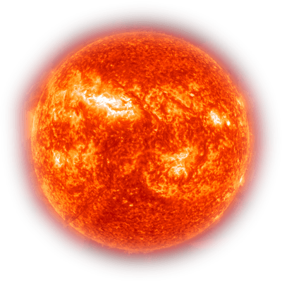
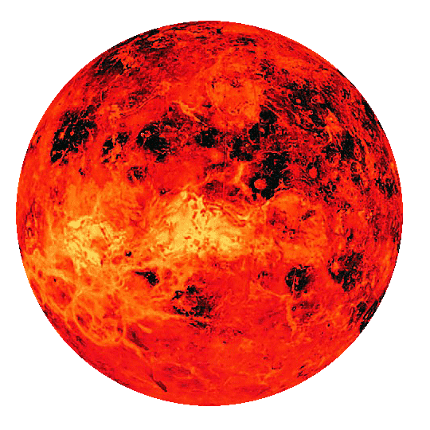

system Alpha
Centauri Trappist
system
 Trebia
Trebiasystem

The Solar System is the gravitationally bound system of the Sun and the objects that orbit it. It formed 4.6 billion years ago from the gravitational collapse of a giant interstellar molecular cloud. The vast majority of the system's mass is in the Sun, with most of the remaining mass contained in the planet Jupiter.
The Sun is the star at the center of the Solar System. It is a nearly perfect ball of hot plasma, heated to incandescence by nuclear fusion reactions in its core. The Sun radiates this energy mainly as light, ultraviolet, and infrared radiation, and is the most important source of energy for life on Earth.

Earth is the third planet from the Sun and the only astronomical object known to harbor life. While large volumes of water can be found throughout the Solar System, only Earth sustains liquid surface water. About 71% of Earth's surface is made up of the ocean, dwarfing Earth's polar ice, lakes, and rivers. The remaining 29% of Earth's surface is land, consisting of continents and islands.
Mars is the fourth planet from the Sun and the second-smallest planet in the Solar System, being larger than only Mercury. In the English language, Mars is named for the Roman god of war. Mars is a terrestrial planet with a thin atmosphere (less than 1% that of Earth's), and has a crust primarily composed of elements similar to Earth's crust, as well as a core made of iron and nickel.
Venus is the second planet from the Sun. It is sometimes called Earth's "sister" or "twin" planet as it is almost as large and has a similar composition. As an interior planet to Earth, Venus (like Mercury) appears in Earth's sky never far from the Sun, either as morning star or evening star. Aside from the Sun and Moon, Venus is the brightest natural object in Earth's sky.
Mercury is the smallest planet in the Solar System and the closest to the Sun. Its orbit around the Sun takes 87.97 Earth days, the shortest of all the Sun's planets. It is named after the Roman god Mercurius (Mercury), god of commerce, messenger of the gods, and mediator between gods and mortals, corresponding to the Greek god Hermes.
Saturn is the sixth planet from the Sun and the second-largest in the Solar System, after Jupiter. It is a gas giant with an average radius of about nine and a half times that of Earth. It has only one-eighth the average density of Earth; however, with its larger volume, Saturn is over 95 times more massive. Saturn's interior is most likely composed of a core of iron–nickel and rock (silicon and oxygen compounds).
Jupiter is the fifth planet from the Sun and the largest in the Solar System. It is a gas giant with a mass more than two and a half times that of all the other planets in the Solar System combined, but slightly less than one-thousandth the mass of the Sun. Jupiter is the third brightest natural object in the Earth's night sky after the Moon and Venus, and it has been observed since prehistoric times. It was named after the Roman god Jupiter, the king of the gods.
Neptune is the eighth planet from the Sun and the farthest known solar planet. In the Solar System, it is the fourth-largest planet by diameter, the third-most-massive planet, and the densest giant planet. It is 17 times the mass of Earth, and slightly more massive than its near-twin Uranus. Neptune is denser and physically smaller than Uranus because its greater mass causes more gravitational compression of its atmosphere.
Uranus is the seventh planet from the Sun. Its name is a reference to the Greek god of the sky, Uranus, who, according to Greek mythology, was the great-grandfather of Ares, grandfather of Zeus and father of Cronus. It has the third-largest planetary radius and fourth-largest planetary mass in the Solar System. Uranus is similar in composition to Neptune.
The Moon is Earth's only natural satellite. Its diameter is about one-quarter the diameter of the Earth. The Moon is the fifth largest satellite in the Solar System. It is larger than any of the known dwarf planets and is the largest satellite relative to its parent planet. ons of the term. It lacks any significant atmosphere, hydrosphere, or magnetic field.
Phobos is the innermost and larger of the two natural satellites of Mars, the other being Deimos. The two moons were discovered in 1877 by American astronomer Asaph Hall. Phobos is named after the Greek deity Phobos, a son of Ares and twin brother of Deimos. Phobos is a small, irregularly shaped object with a mean radius of 11 km.
The asteroid belt is a torus-shaped region in the Solar System, located roughly between the orbits of the planets Jupiter and Mars. It contains a great many solid, irregularly shaped bodies, of many sizes, but much smaller than planets, called asteroids or minor planets.